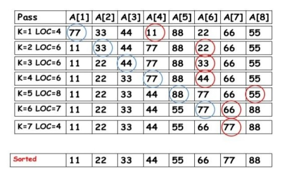

Seletion Sort − Selection sort is a simple sorting algorithm. This sorting algorithm is an in-place comparison-based algorithm in which the list is divided into two parts, the sorted part at the left end and the unsorted part at the right end. Initially, the sorted part is empty and the unsorted part is the entire list.
This algorithm is not suitable for large data sets as its average and worst case complexities are of O(n^2), where n is the number of items.
How Selection Sort works?
Suppose an array A with N elements is in memory. Selection sort works as follows
First find the smallest element in the array and put it in the first position. Then, find the seceond smallest element in the array and put it in the second position and so on.
First we write algorithm to find location LOC of smallest element
MIN(A,K,N,LOC)
This procedure will find the location LOC of the element among A[K],A[K+1],...A[N].
Algorithm of selection sort using MIN function.
SELECTION_SORT(A,N)
This algorithm sort the array A with N element.
O(n^2)
O(n^2)